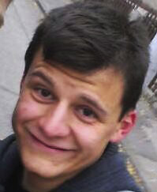
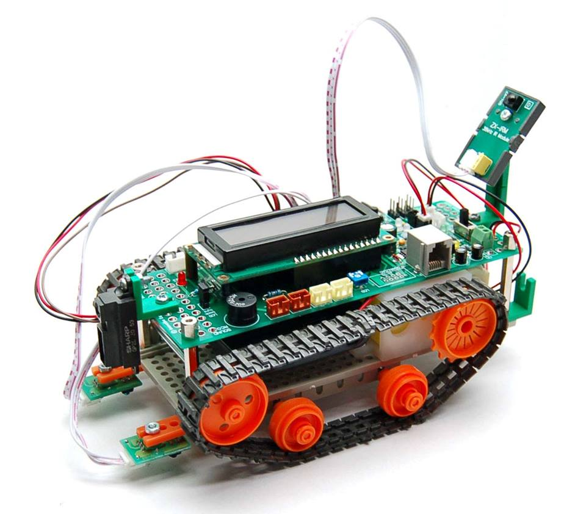
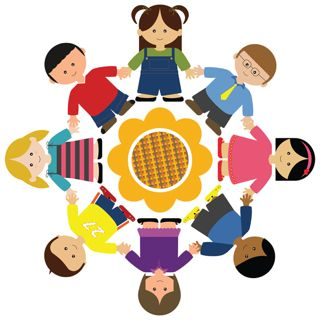

S3 Pozega 2014 (July 24th - August 1st): PROGRAM
PROJECTS
- Growth Curve: Road to the Stellar Structure
- Can a Heart be Broken?
- Electric Shocks and Gambling: the Hydrogen Bond
- Robot Obstacle Avoidance System
- Water and Rock: A Deadly Combination
WORKSHOPS
LECTURES
PROJECTS
Growth Curve: Road to the Stellar Structure
How is the light from stars we see today influenced by the conditions they were born in? Stars emit energy in the form of light and from the distribution of energy in the light we are able to recognise many of their characteristics. From these characteristics we can determine important stellar parameters which give us insight into how that star formed. Star formation is a crucial part of stellar evolution, so learning about the conditions under which star was formed we can predict its entire life. Through evolution of the technology now we are able to compute many different simulations. One of them is computing synthetic stellar spectrum, based on which we are able to examine the conditions under which stars are formed.
Determining the stellar parameters is the toughest and one of the most fundamental fields in astronomy. This project is about constructing the precise growth curve for the Sun, and to provide an algorithm that will be used for finding the growth curve of other stars and their parameters. Students will have to identify lines, FeI and TeI, in the stellar spectrum and to derive some data from it. They will learn how to program in C++ and MATLAB, how stellar spectrum is formed, and what they can determine from it. Knowledge that students will get, working on this project, can be used and in other fields like chemistry, biology, geology etc.
 Dusan Vukadinovic
Dusan Vukadinovic
University of Belgrade, Serbia
Dusan is studying astrophysics at the Belgrade University. His interests are in stellar astrophysics (stellar atmosphere; radiative transfer; line formation). While he was in high school, Dusan attended Petnica Science Center seminars (Serbia) where he finished three projects in the field of astronomy. Also, he is interested in conservation of energy (Sun energy). Dusan's interests besides science are cycling, long walking with long conservations, music and dance, cooking and other interesting things.
Can a Heart be Broken?
 Throughout the history the human heart has served as a symbol of life, love, emotion, intelligence, and reason. At one time, philosophers even believed that the heart, rather than the brain, was the organ of consciousness. Thanks to science we now know some astonishing facts about the importance and function of the heart. From the moment heart begins beating until the moment it stops, the human heart works tirelessly. It is a vital organ characterized with a flow of electrical impulses from one part of the heart to another. These impulses cause the heart to contract and relax, pump blood to the body and vital organs. Abnormal electrical impulses cause the heart to beat too slow, too fast, or irregularly. Cardiac abnormalities are one of the most common diseases among the population, specially the elderly. Therefore, it is important for science to understand the mechanisms how a healthy heart works.
Throughout the history the human heart has served as a symbol of life, love, emotion, intelligence, and reason. At one time, philosophers even believed that the heart, rather than the brain, was the organ of consciousness. Thanks to science we now know some astonishing facts about the importance and function of the heart. From the moment heart begins beating until the moment it stops, the human heart works tirelessly. It is a vital organ characterized with a flow of electrical impulses from one part of the heart to another. These impulses cause the heart to contract and relax, pump blood to the body and vital organs. Abnormal electrical impulses cause the heart to beat too slow, too fast, or irregularly. Cardiac abnormalities are one of the most common diseases among the population, specially the elderly. Therefore, it is important for science to understand the mechanisms how a healthy heart works.
The main goal of this project is to explore and learn about the mechanisms during the heart contraction and relaxation and how various abnormalities affect the healthy heart. We will be measuring and interpreting the electrocardiogram of the human heart (participants themselves). Also, we will be dealing with vascular distensibility and functions of arterial and venous system. As many of you already know, blood consists od plasma and eritrocites, so we will explore their function and how they can change depending on state of organism (dehidration or hiperhidration). „Time is life itself, and life resides in the human heart.“ , speaks for itself the meaning and the benefits of this project.
Mislav Omerbasic
University of Zagreb, Croatia
Mislav is a 2nd year student of Medicine at the University of Zagreb. He participated at the Summer School of Science two times, both at the S3++ camp. Last year he was a Swapshop leader in S3 camp in Pozega. Mislav is always open to learning new things as he always gets fascinated by the things he discovers. Mislav enjoys watching scientific videos and reading scientific articles. In his free time he loves hanging out with friends, watching movies and playing video games.
Diana Culej
University of Zagreb, Croatia
Diana is a 3rd year student of Medicine at the University of Zagreb. Diana has been a participant of Summer School of Science two times, in the S3 camp in 2009 and S3++ camp in 2011. Also, she came to the School two years in a row as a Swapshop leader. At her faculty, she is a demonstrator at the Department of Anatomy and Clinical anatomy and a member of CroMSIC. In her spare time, Diana likes to travel, watch movies and hang out with friends.
Electric Shocks and Gambling: the Hydrogen Bond
 Hydrogen bonds are not-so-well-understood chemical bonds between a hydrogen atom and some more electron-greedy atom not covalently bound to it. Those bonds are of uttermost importance to us, life forms. It is because the water, by having ability to form hydrogen bonds, isn’t a gas at room temperature, but a well-behaved liquid in which the biological processes can persist. A hydrogen bond keeps our biological ID card, the DNA, in one piece, and enables the elasticity and the strength of nylon stockings. It is the cause of adhesive ability of some glues, and good miscibility of ethyl alcohol and water in beer.
Hydrogen bonds are not-so-well-understood chemical bonds between a hydrogen atom and some more electron-greedy atom not covalently bound to it. Those bonds are of uttermost importance to us, life forms. It is because the water, by having ability to form hydrogen bonds, isn’t a gas at room temperature, but a well-behaved liquid in which the biological processes can persist. A hydrogen bond keeps our biological ID card, the DNA, in one piece, and enables the elasticity and the strength of nylon stockings. It is the cause of adhesive ability of some glues, and good miscibility of ethyl alcohol and water in beer.
Edi Topic
University of Zagreb, Croatia
Edi is a second year student of chemistry at the University of Zagreb. He is interested in material sciences and inorganic chemistry, but also physics and all kinds of experimental sciences. Edi was working as a project leader on last year’s S3, as a teacher on the 21st Summer Computer Science School and is a winner of two Bronze Medal Awards at International Chemistry Olympiad in Ankara and Washington. In free time Edi likes to do do-it-yourself projects, cook and play guitar.
Robot Obstacle Avoidance System
We are aware of the presence of all kinds of electronics systems in our everyday lives, but have you ever wondered how do they work? What makes it possible for phones to transmit voice, for planes to fly safely, for refrigerator to keep the food cold? All those complex systems rely on various embedded systems. Embedded system design is an engineering field which studies the design principles of electrical systems which are embedded in some larger system and designed to perform some dedicated function. The heart of an embedded system is often an electrical device called a microcontroller which performs the task of controlling the whole embedded system. The field of robotics greatly relies on embedded system design because many components of a robot are actual embedded systems. Every sophisticated robot requires a system for navigation through unknown environment in order to fulfill some other task. Obstacle avoidance system is fundamental component of any robot navigation system.
In this project we will use a mobile platform to construct a fully functional robot that can successfully avoid obstacles. The participants are going to design an embedded system to perform the obstacle avoidance task of the robot. They are going to program the microcontroller to drive the robot motors and to perform data acquisition from proximity sensor mounted on the robot. By using data acquired from the proximity sensor the participants are going to program the microcontroller to detect obstacles and change robot movement direction in order to avoid them. Finally, they will perform a series of measurements in order to describe the properties of the constructed robot.
Lazar Milenkovic
University of Belgrade, Serbia
Lazar is a 1st year student of Faculty of Computing. He is interested in theoretical computer science, artificial intelligence, computer graphics and robotics. He completed several projects involving robotics and computer simulation as a participant of seminar of Applied Physics and Electronics at Petnica Science Center. His hobbies are playing violin, guitar and competitive programming.
Milos Stojanovic
University of Belgrade, Serbia
Miloš is a 2nd year student of Electrical Engineering and Computing at the University of Belgrade.He is interested in the fields of signal processing,automatic control and embedded systems. He realized several projects involving mentioned fields at Petnica Science Center in Serbia, where he now helps the high school students to make their first steps in science at seminar of Applied Physics and Electronics. In free time Miloš enjoys playing the piano and spending time with his friends.
Water and Rock: A Deadly Combination
Planet Earth is artificially separated into different spheres, from ones that provides animals and plants with necessary gases like oxygen and carbon dioxide, to spheres that provides living beings to live (walk) and thrive (swim) on like lithosphere and hydrosphere. Not only that living beings are connected through these so called spheres, spheres themselves are connected and mutually dependent. Their composition is ever-changing because the planet Earth is a dynamic ecosystem in which conditions vary through time and space.
This project will be focused on mentioned changes in the environment aiming on the hydrosphere-lithosphere boundary. Participants will learn how geology as a science can be of significance in the study of the environment. The project includes fieldwork, laboratory and outdoor monitoring, data analysis and interpretation. Final result of the project will be a poster containing gathered and analysed data with a viable interpretation of changes in the studied environment (Croatia, Slavonia county).
 Bojan Karaica
Bojan Karaica
Croatian herpetological society HYLA, Zagreb, Croatia
Bojan holds a degree in the field of Environmental geology from the Geology department of Faculty of science, University of Zagreb. In the past year he has worked as an intern, mostly in the wider city area of Zagreb and in the karstic coast of eastern Adriatic on projects linked to water supply, monitoring, tracing of underground water, defining sanitary protection zones and geological hazards. Bojan enjoys hiking, being outdoors, dancing and sailing.
Montessori Cosmic Education
Montessori education at its core, it simply is a way of being with children that allows each child to develop fully into the person he was destined to be. Now, more than ever, we need critical thinkers, entrepreneurs and do-ers. In this workshop we will see how to prepare students to take on the future with confidence and gift of self knowledge and a lifelong passion for learning. The starting point for all courses of study, especialy in Cosmic education is the “Great Lessons”; these impressionistic and scientific stories are presented and give the students the “big picture” of astronomy, earth science, geography, chemistry, physics, biology, history, cultural and social studies, language, math, music, and art. Meaningful learning happens when students are inspired by a lesson and begin to explore the subject and work on their own. Participants will be presented an example of a subsequent lesson which offer keys for exploring these areas of human knowledge in more detail. At the end students will develope didactic materials based on Montessori principles.
Workshop leader: Luka Vukovic (Montessori school Zagreb, Croatia)
Research Swapshop
Quantum dots
A quantum dot is a nanoparticle made of semiconductor material that is small enough to exhibit quantum mechanical properties. These properties are in between bulk semiconductor and single molecule properties. What is fascinating is that these properties are directly connected to size of the quantum dot, which can be highly tunable by adjusting the time of synthesis. Quantum dots are nowadays used in researching semiconductors, medicine and various other applications. Participants of this workshop will embrace the challenge of synthesis of actual quantum dots, they’ll learn about structure of solid matter, quantum mechanics and spectroscopy.

Workshop leader:
Nea Baus (Faculty of Science, University of Zagreb, Croatia)
How to unlock the secrets of the Universe?
The many marvelous pictures of celestial objects taken using large telescopes on the ground or in space are certainly the most visible manifestation of modern research astronomy. But why these photographs are important for astronomers? Almost all astronomical information about space comes to us from light. How do the astronomers detect and analyse this light? This swapshop will introduce students in methods of astronomical observations. Participants will have a chance to use simulated instruments and then analyse data collected from observations to see structure, temperature, size and other characteristics of the observed object. They will also learn what kind of observations can be done even with small telescopes, at home, and still get usable data and correct results.

Workshop leader:
Ana Bogdanovic (Science centar "Petnica", Serbia)
Arachnology - environmental adaptations of spiders
Spiders have always been in focus of people, first trough stories and mythologies, and later trough science. The research conducted on spiders improved our knowledge, foremost, about venoms and silk production, and helped the development of new technologys and medicine. Since, almost all of them are predatory, their various ways of hunting and catching prey, style of living and body shapes and body colors are all adaptations to the environment in which they live. All these leads to complications when we try to explain evolution and how some things are possible even in this little ecosystem ruled by insects. The aim of this swapshop is to explain general evolution and environmental adaptations of animals, using the most common croatian species of spiders as examples. This swapshop will show the participants what zoologists really do and why, and will be shown how rich the variety of spiders is on relatively small areas and what are the main causes of this variety.
Workshop leader:
Domagoj Gajski (Faculty of Science, Zagreb, Croatia)
Informatics - a revolution in science
It is impossible to imagine today’s world without computers and sophisticated software tools that make our everyday life simpler and easier. The use of infomatics had found its way into virtually every scientific discipline as well, and through the application of informatic approaches onto different fields of science, new disciplines such as bioinformatics, geoinformatics,ecoinformatics and numerous others came into existence. Thus, a whole new aspect had been added to the process of scientific research. However, many of the newly designed programs can be used for various purposes other than science, such as education and applied in parts of everyday life. For example, nowadays there is rarely anyone who owns a cellphone or a car without the Global PositioningSystem, which is a product of geoinformatics efforts. This swapshop will serve as a theoretical and experimental introduction to such applied informatics.

Workshop leader:
Hrvoje Miseric (Faculty of Science, Zagreb, Croatia)
The world of proteins: where order and chaos coexist
Proteins, as innately versatile molecules, have an immense significance in disciplines such as biochemistry, biophysics and molecular biology, whereas their study is also of great value to certain branches of the industrial sector. During the second-half of the 20th century, research in protein science has witnessed rapid advancements due to the development of novel experimental approaches for the study of macromolecules. The vast amount of newly-available data on protein structure and function has been used in directing further studies in other fields as well, bearing a particular impact on medical and pharmaceutical research. In the last decade, however, efforts in characterizing protein structure have lead to the discovery of proteins which are able to function without having a stable, fully formed 3D structure. The findings were first perceived as an error because they opposed the traditional paradigm indicating that the structure of a protein is what defines its function,but they have eventually been affirmed, causing a revolution in structural biology and giving rise to the field of intrinsically disordered proteins (IDPs). In this swapshop, the participants will gain theoretical knowledge and hands-on experience with this fascinating part of all living organisms.

Workshop leader:
Ingrid Tomljanovic (Faculty of Science, Zagreb, Croatia)
Nature in balance - with a grain of salt
Chemical equilibrium is one of the fundamental phenomena in chemistry. There are countless natural systems which are either in equilibrium, or strive towards achieving it. We, as well as all living organisms, depend on equilibrium to help us regulate a variety of processes that our bodies could not function without. However, it is also important to understand the principles of equilibrium for more practical reasons. Producing ammonia on an industrial scale, extracting components from mixtures and using equilibrium in some medical procedures are just a few examples. Balanced systems are all around us - a plain glass of water contains more than one, and if we can understand how they are governed, we will begin to perceive both nature and ourselves differently. This workshop will focus on illustrating the laws of equilibrium through a short lecture, a series of experiments involving soluble and insoluble salts and measuring the properties of saturated solutions. By conducting several simple experiments on their own and attempting to explain them, the participants will gather new knowledge that will greatly ease their apprehension of equilibrium in further education.
Workshop leader:
Lovro Trgovec-Greif (Faculty of Science, Zagreb, Croatia)
LECTURE SCHEDULE
July 25th 2014
Dunja Potocnik (Institute for Social Research, Croatia): Role models, money and fame: Do they matter in (science) career choice?
July 27th 2014
Nives Skunca (ETH, Switzerland): Art, love, and the pursuit of knowledge in cooking
July 28th 2014
Vincent Kusters (ETH, Switzerland): Magic, memory and mathematics
July 30th 2014
Bojan Zagrovic ( University of Vienna, Austria): On the origin of the universal genetic code
ABOUT THE LECTURERS
 Dunja Potocnik, a Scientific Associate at the Institute for Social Research in Zagreb, received a PhD in sociology from the University of Zagreb. She is a member of the Steering Committee of the Science and Society Synergy Institute where she runs projects in the field of science popularisation and policy driven research projects. Her scientific work includes topics on youth employment, general youth policy, youth and new technologies, social structure and sociology of professions. Dunja has been active in committees at the European Commission and the Council of Europe working on science, education and youth policies. She has experience in establishing and running national and international non-governmental associations in the field of science policy.
Dunja Potocnik, a Scientific Associate at the Institute for Social Research in Zagreb, received a PhD in sociology from the University of Zagreb. She is a member of the Steering Committee of the Science and Society Synergy Institute where she runs projects in the field of science popularisation and policy driven research projects. Her scientific work includes topics on youth employment, general youth policy, youth and new technologies, social structure and sociology of professions. Dunja has been active in committees at the European Commission and the Council of Europe working on science, education and youth policies. She has experience in establishing and running national and international non-governmental associations in the field of science policy.
Nives Skunca is a PhD student at ETH Zürich. As a bioinformatician, she explores large biological datasets—genetic, proteomic, and molecular biology data—with an innovative use of data analysis approaches—machine learning, applied statistics, and visualization. She studied at the Faculty of Food Technology and Biotechnology, University of Zagreb, where she was first introduced to bioinformatics. After finishing her undergraduate studies, she started working at the Rudjer Boskovic Institute, pursuing her curiosity about bioinformatics as a PhD student in the Computational Biology and Bioinformatics Group. A string of happenstances durig her IRB position—a poster presentation at a conference, an accepted visitor's grant, and an open position in the Computational Biochemistry Research Group—led to her current position. Web page: http://skunca.info
 Bojan Zagrovic, a native of Croatia, obtained his undergraduate degree in biochemistry from Harvard University and PhD in biophysics from Stanford University where he was one of the founding members of the Folding@Home project in the group of Vijay S. Pande. After a postdoctoral stay at ETH Zurich in the group of Wilfred F. van Gunsteren and a 3-year group leader position at the Mediterranean Institute of Life Sciences in Split, he became a group leader at the Max F. Perutz Laboratories of the University of Vienna in 2010, leading the Laboratory of Computational Biophysics. His research interests span diverse areas of computational biophysics including protein-RNA interactions, post-translational modifications and conformational averaging in structural biology.
Bojan Zagrovic, a native of Croatia, obtained his undergraduate degree in biochemistry from Harvard University and PhD in biophysics from Stanford University where he was one of the founding members of the Folding@Home project in the group of Vijay S. Pande. After a postdoctoral stay at ETH Zurich in the group of Wilfred F. van Gunsteren and a 3-year group leader position at the Mediterranean Institute of Life Sciences in Split, he became a group leader at the Max F. Perutz Laboratories of the University of Vienna in 2010, leading the Laboratory of Computational Biophysics. His research interests span diverse areas of computational biophysics including protein-RNA interactions, post-translational modifications and conformational averaging in structural biology.
Vincent Kusters is a PhD-student in Theoretical Computer Science at ETH Zurich in Switzerland. He completed his bachelor and master in Computer Science and Engineering at the Eindhoven University of Technology in the Netherlands. This included a 3-month internship at CERN (the European Organization for Nuclear Research) in Geneva, Switzerland, where he wrote tools to automatically find errors in the CMS detector control software. His current research focuses on the computational aspects of geometry; specifically on how to automatically make a drawing of certain mathematical objects subject to certain constraints. He has been an avid performer of card magic for the last eight years and will combine his love for magic and mathematics in his talk.
Copyright © 2014 Society for Out of Frame Education. All Rights Reserved.
Webdesign: Martina Mijuskovic. General text: Branimir Lukic and Martina Mijuskovic. Croatian translation: Matilda Males.